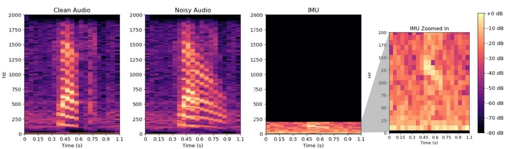

Under review at NeurIPS 2023
We propose a self-supervised speech denoising framework on earphones. Modern earphones are equipped with IMUs that sense the vibrations due to human speech. Of course, the IMU’s sampling rate is ≈ 400 Hz, hence the recording of the human speech is heavily aliased and distorted by the non-linear human bone-channel. However, ambient sounds do not induce vibrations in the IMU, implying that the IMU signal remains immune to external interference. The microphone on the other hand records a high quality signal from the user’s mouth (44 kHz), but can be heavily polluted by ambient interference. With multi-modal data from both the microphone and IMU (see spectrograms in the figure below), we see an opportunity to close gaps in speech enhancement.
We propose a self-supervised architecture that does not rely on clean speech data to train the network. Instead, we utilize the everyday, noisy recordings from the earphone that the user can record on the fly. The key idea is to develop a cooperation between the IMU and the microphone, so each modality can teach and learn from the other. To this end, our alternating architecture, AlterNet, is composed of two separate models — a Translator and a Denoiser.
Briefly, the Translator translates the distorted IMU signal to higher-resolution audio, and then constructs a time-frequency mask to crudely identify the locations of user’s speech. The Denoiser, which only has noisy speech signals, uses this crude mask to slightly enrich the user’s speech signal. The Denoiser’s output — the slightly enriched speech signal — now offers a reference to the Translator to learn a better mask, which is in turn fed back to the Denoiser to further enrich the speech signal. The iterations converge to an SNR-enhanced voice signal at the output of the Denoiser, even in the presence of strong interference. Importantly, no clean speech is needed to bootstrap or train this network; the noisy voice signal can even be at 0 dB SINR.
The figure below shows the proposed network architecture, with a Translator on top and a Denoiser below it. For self-supervision, the Translator needs to supply a reference signal to the Denoiser. This means the vibration signal L at 400 Hz needs to be translated to an audio signal that approximates the target speech signal. Since this signal needs to be at, say, 16 kHz, the Translator’s task is that of super-resolution. This large up-sampling factor from 400 Hz to 16 KHz is prone to overfitting with a conventional auto-encoder. Hence, we design the network as a guided autoencoder to inherit earlier successes in [1]. The idea is to up-sample the signal in multiple stages, each stage with a small up-scaling factor and a corresponding stage loss. Using a 3-stage decoder, we up-sample L, represented in the time-frequency (TF) domain, from 400 Hz to 800, 3200, and finally to 16 KHz. The final loss is regularized by the individual stage losses to curb the decoder from overfitting. Of course, the reference signal for computing loss is the noisy audio signal H from the microphone (but in subsequent rounds, becomes the output of the Denoiser).
We intend to characterize the gains from IMU (compared to audio-only denoiser), and the loss from self-supervision (compared to supervised methods where clean audio is available). Hence, we compare with several baselines as follows:
This section contains the input and output audio samples of different models. "Noisy" audio is the input audio contains the target speech overlapping with the interference audio. Each row represents a different speech mixture.
We first show the challenging scenarios, where the interference is only 5dB weaker than the target speech, and the words completely overlap with each other.
| Noisy | Target | Interference | Supervised Denoiser | Supervised AlterNet* | Self-supervised AlterNet* |
|---|---|---|---|---|---|
Our model can work even if the interference is as strong as the target speech signal.
| Noisy | Target | Interference | Supervised Denoiser | Supervised AlterNet* | Self-supervised AlterNet* |
|---|---|---|---|---|---|
We have published the code and the dataset on Github: Github link to the dataset.
[1] W. Lai, J. Huang, N. Ahuja, and M. Yang. Deep laplacian pyramid networks for fast and accurate super-resolution. In Proceedings of the IEEE conference on computer vision and pattern recognition, pp. 624–632, 2017.
[2] S. Park and J. Lee. A fully convolutional neural network for speech enhancement. arXiv preprint arXiv:1609.07132, 2016.